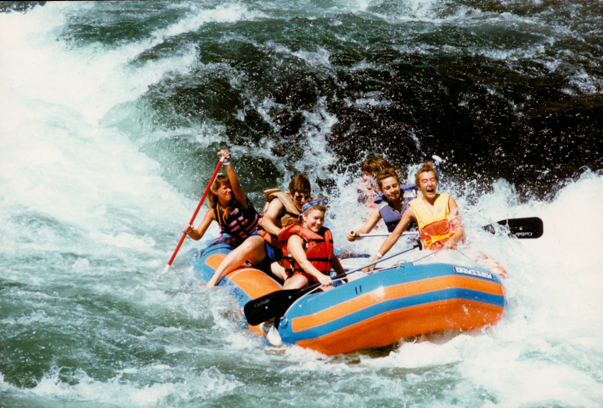
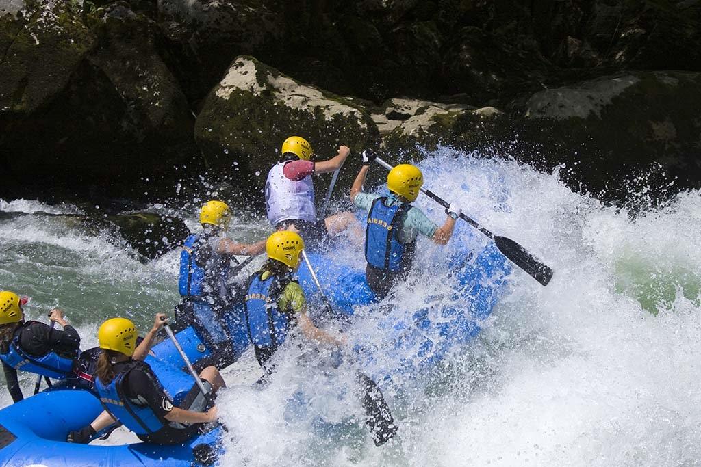

Where do you want to go?
OUR TRIPS
Upper Deschutes River

The Upper Deschutes River package offers beginner level rafters the chance to experience the excitement of white water rafting through Class I and II rapids. In the middle of this day trip, rafers take a brief break to relax on the shores of the beautiful Deschutes River Valley before continuing on.
Lower Deschutes River
The Lower Deschutes River package enables those with some white water rafting experience to challenge themselves on Class II and III rapids. This is the perfect trip for the intermediate level rafter who needs to get their white water fix without planning a long trip. All they need is a day on the Lower Deschutes!
Deschutes River
The Deschutes River package is for the serious and advanced level white water rafter. The thrill of adventure is a guarantee on this trip! This four-day camping excursion includes Class I, II, III, and IV rapids. Rafters can bring their own camping equipment or rent equipment from us. Don't miss out on this epic adventure!
| WHAT | Experience Level | How long? | What is Provided? | Cost p/Person |
| Upper Deschutes River Package | Beginner | Day Trip (about 6-8 hours) |
|
$65.00 |
| Lower Deschutes River Package | Intermediate | Day Trip (about 6-8 hours) | $70.00 | |
| Deschutes River Package | Advanced | 4 days | $400.00 |